화약류관리기사 (2019-03-03 기출문제)
1과목: 일반화약학
1. 화약류의 일반적인 폭발속도(촉속)로 옳은 것은?
- 블라스팅 마이너마이트는 약 1000~1200m/s
- 질산암모늄 폭약은 약 7000~8000m/s
- 초유폭약(ANFO)은 약 2500~3000m/s
- 카알릿(carlit)은 약 1000~2000m/s
(정답률: 85%)

2. 법에 의한 화약류 분류에 있어서 폭약에 해당하지 않는 것은?
- 공포탄
- 뇌홍
- 펜트리트
- 테트릴
(정답률: 87%)
3. 화약류의 산소 평형에서 1g당 산소 과부족량(g)이 +0.200인 물질은?
- 질산암모늄
- 질산칼륨
- 니트로글리콜
- 테트릴
(정답률: 82%)
4. 쇼크튜브(Shock tube)형 비전기 뇌관의 구성요소와 관계없는 것은?
- 첨장약
- 기폭약
- 지연장치
- 도화선
(정답률: 67%)
5. 다음 화약류 중 DB(복기) 화약이 아닌 것은?
- 콜다이트(cordite)
- 바리스타이트(ballistite)
- 무용제화약
- 피로콜로디온(pyrocolldion) 화약
(정답률: 79%)
6. PENT의 1g당 산소평형 값은?
- -0.101
- +0.035
- -0.387
- +0.200
(정답률: 85%)
7. 주석 또는 납판 내에 용융된 폭약을 채워서 선 모양으로 뽑아낸 것으로 폭속은 5500m 이상이며 주로 전폭용과 폭속 측정용으로 쓰이는 도폭선은?
- 제1종 도폭선
- 제2종 도폭선
- 제3종 도폭선
- 제4종 도폭선
(정답률: 78%)
8. 다음 중 정전기에 영향을 잘 받기 때문에 정전기 발생에 대한 예방이 가장 필요한 화약류는?
- TNT
- 니트로글리세린
- 건면약
- 공업뇌관
(정답률: 92%)
9. 다음 중 폐약처리시 NaoH 수용액을 사용할 수 없는 것은?
- 뇌홍
- 아지화납
- DDNP
- 테트라센
(정답률: 57%)
10. 다음 중 화약류의 폭발속도를 측정하는 방법이 아닌 것은?
- 도트리쉬법
- 광섬유법
- 구포시험
- 이온갭법
(정답률: 79%)
11. 다음 중 질산에스테르류에 해당되지 않는 것은?
- 니트로셀룰로오스
- 니트로글리세린
- 피크린산
- 펜트리트
(정답률: 90%)
12. 연소초시 시험에 따른 도화선 성능 측정시험에서 도화선 5개의 연소초시를 측정한 평균값의 범위는 1m에 대하여 얼마이어야 하는가?
- 100~110초
- 100~120초
- 100~130초
- 100~140초
(정답률: 89%)
13. 슬러리(slurry) 폭약에 대한 설명 중 틀린 것은?
- 내수, 내습성이 양호하다.
- 물을 함유한다.
- 수공(水攻)내에서도 충전이 가능하다.
- 다른 폭약에 비해 충격에 극히 민감하다.
(정답률: 89%)
14. 젤라틴 다이너마이트를 탄동구포 시험한 결과 흔들림 각도가 16도 일 때 상대중량강도(RWS)는 몇 %인가? (단, 기준폭약인 블라스팅 마이너마이트의 흔들림 각도는 18도이다.)
- 80
- 85
- 90
- 95
(정답률: 70%)
15. 비전기식 뇌관에 사용되는 시그널튜브의 폭속은?
- 500m/s
- 2000m/s
- 5000m/s
- 10000m/s
(정답률: 85%)
16. 폭약 중 폭발 반응에서 산소가 부족하지 않은 것은?
- TNT
- 테트릴
- 헥소겐
- 니트로글리세린
(정답률: 75%)
17. 질산암모늄은 32.3℃를 오르내리면서 용적변화가 일어나고 입자표면의 파괴나 수분의 방출로 인하여 고화현상이 발생한다. 이와 같이 32.3℃와 같은 온도를 무엇이라고 하는가?
- 전이점
- 융점
- 응고점
- 임계점
(정답률: 80%)
18. 기폭약으로 쓰이지 않는 것은?
- diazodinitrophenol
- lead azide
- tetracene
- dinitrobenzene
(정답률: 75%)
19. 약경 32mm, 약량 125g의 50% Dynamie를 순폭시험한 결과 순폭도는 7이었다. 시간이 경과한 후 동일한 조건으로 다시 시험하였더니 최대 순폭거리가 160mm이었다. 순폭도는 얼마나 감소하였는가?
- 1
- 2
- 3
- 5
(정답률: 95%)
20. 다음 중 TNT의 주원료로 사용되는 것은?
- 페놀
- 벤졸
- 톨루엔
- 크실렌
(정답률: 92%)
2과목: 발파공학
21. 어떤 경우에 있어서도 약실의 투사면적이 최대일 때의 약실의 형상에 해당하는 것은?
- 원통형
- 정방형
- 구형
- 장방형
(정답률: 64%)
22. 폭약의 동적효과를 나타내는 폭굉압에 대한 설명으로 옳은 것은?
- 폭속의 제곱에 비례
- 장전비중의 제곱에 비례
- 정적효과 이후에 구현되어 암반을 파쇄
- 정적효과보다 지속시간이 길고, 파쇄암반의 이동을 유발
(정답률: 62%)
23. 발파진동의 전파특성을 크게 입지조건과 발파조건으로 나눌 수 있는데 입지조건으로 가장 옳은 것은?
- 발파부지와 인근 구조물의 기하학적 형태
- 폭약의 종류 및 장악량
- 자유면의 수
- 폭발원과 측점간의 거리
(정답률: 60%)
24. 시험발파결과 정약량이 20kg일 때 누두지수가 0.8로 약장약 발파가 되었다. 최소저항선을 동일하게 하였을 때 표준발파가 되기 위한 장악량은 얼마인가? (단, 누두지수 함수는 Brallion식 이용)
- 1.25kg
- 2.71kg
- 3.32kg
- 4.06kg
(정답률: 35%)
25. 다음 중 발파계수(C)에 대한 설명으로 옳지 않은 것은?
- 발파계수는 발파 대상 암석의 어떤 부피를 발파하는데 필요한 장약량을 결정하는 계수이다.
- 발파계수는 암석항력계수, 폭약위력계수, 전색계수의 곳(C=gㆍeㆍd)으로 나타낸다.
- 폭약위력계수(e)는 NG 90%의 다이너마이트를 표준으로 해서 기타 폭약의 위력을 비교하는 계수이다.
- 전색계수(d)는 폭약을 천공 내에 장전하고 구멍을 모래 등으로 메꾸는 정도에 따라 달라지는 계수로 불완전 전색의 경우 전색계수 값은 1보다 크다.
(정답률: 66%)
26. 단일자유면 발파에 있어서 채석량(V)과 최소저항선(W)의 관계는? (단, 누두반지름은 r 로 함)(관리자 입니다. 보기 1, 2, 3, 4번이 정확하지 않은듯 합니다. 다른 문제집 확인 가능한분 계시면 확인 부탁 드립니다. 오류신고를 통해서 남겨 주시면 수정할수 있도록 하겠습니다.)
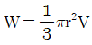
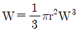
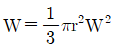
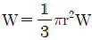
(정답률: 52%)
27. 계단식 발파(bench blasting) 설계에서 가장 중요한 것은 최대저항선을 결정하는 일이다. 천공경 33mm, 장약밀도 1.25kh, 폭약의 중량강도 1, 암석상대계수 0.45kg/m3, 발파공의 구속 계수 1, 공간격/저항선의 비 1.25일 때 최대저항선은 얼마인가?
- 1.0m
- 1.5m
- 2.0m
- 2.5m
(정답률: 56%)
28. 폭약의 폭발력을 특정한 방향으로 전달하기 위한 반구형 또는 원뿔구조를 가지고 있는 폭약에 대한 설명으로 옳지 않은 것은?
- 성형폭약(Shapeg Charge)이라 한다.
- 저폭속 폭약을 사용한다.
- 먼로 효과(Munro effcet)를 이용한다.
- 철골이나 철판을 절단할 때 사용한다.
(정답률: 75%)
29. 발파음의 특성에 대한 설명으로 틀린 것은?
- 지속시간이 짧다.
- 주파수대는 50~2000Hz 이며, 주요 주파수는 50~150Hz 이다.
- 발파조건에 따라 주파수 및 음압이 변화하지 않는다.
- 일반적으로 음압레벨 단위는 dB(L), 소음레벨은 dB(A)로 나타낸다.
(정답률: 63%)
30. 계단식 발파에서 계단높이(H)와 저항선(B)의 비율 H/B가 4보다 작은 경우 제발발파를 한다면 공간격(S)을 구하는 식으로 옳은 것은?
- S=2.0B
- S=1.4B
- S=(H+2B)/3
- S=(H+7B)/8
(정답률: 64%)
31. 수중유적형 폭약의 성분에 대한 설명으로 옳은 것은?
- HNO3를 산화제로 사용한다.
- 저 HLB 계면활성제가 반드시 필요하다.
- 기름성분의 분산상으로 존재한다.
- 예감제와 안정제가 반드시 필요한 것은 아니다.
(정답률: 42%)
32. 안반사면을 조성하기 위하여 Trim Blasting을 적용하고자 한다. 발파공의 직경이 76mm일 때 저항선을 얼마로 하여야 하는가? (단, 공간격 S=160s 적용, 여기서 Ds는 발파공의 직경)
- 1.59m
- 1.22m
- 1.69m
- 1.32m
(정답률: 56%)
33. 폭약에 대한 설명으로 옳지 않은 것은?
- 포유폭약은 질산암모늄을 주성분으로 하여 폭약 중 안정성이 우수한 저폭속, 저비중 제품이다.
- 포안폭약은 질산암모늄을 주성분으로 하여 취급에 있어 안전하고 흡습성이 거의 없는 것이 특징이다.
- 정밀폭약은 조절발파에 사용되며, 모암균열의 극소화, 여굴의 방지, 미려한 발파 마무리면을 얻을 수 있다.
- 미진동 파쇄기는 고열반응에 의한 순간적인 열팽창으로 암석에 균열이 발생되는 원리를 이용하였다.
(정답률: 49%)
34. 파쇄암석의 형상은 가지각색이며 공중을 날아갈 때에는 복잡한 공기저항을 받아 감속된다. 공기저항을 무시한다고 가정하고 암편이 50m/s, 사각 45°로 위쪽에 내던졌다고 하면, 그 암편을 내던진 지점과 같은 수평면에서의 비산거리는 얼마인가?
- 180.38m
- 2⑤.10m
- 235.10m
- 255.10m
(정답률: 26%)
35. 측벽효과(Channel Effect)에 대한 설명으로 옳은 것은?
- 폭약의 측면과 천공내벽 사이에 틈새가 있을 때 사압현상이 발생하여 잔류약이 남은 현상을 말한다.
- 자유면의 수가 많을수록 적은 약량으로 파쇄가 가능한 경우를 말한다.
- 약실의 형상에 따라 발파효과가 커지는 현상을 말한다.
- 시차간격이 짧을수록 파쇄도는 좋게 나타나고 비산은 큰 현상을 말한다.
(정답률: 75%)
36. 발파해체공법의 종류 중 전도공법에 대한 설명으로 옳지 않은 것은?
- 기술적으로 가장 간단한 공법이다.
- 주변의 여유공간이 없을 경우에 적용한다.
- 전도방향의 제어로 계획된 공간내에서 전도붕괴가 가능하다.
- 대상구조물은 굴뚝, 고가수조, 송전탑 등이다.
(정답률: 78%)
37. 지반진동속도에 영향을 미치는 요소가 아닌 것은?
- 계측기기
- 발파효과
- 폭약의 종류
- 지반상태
(정답률: 75%)
38. 다음 중 전자뇌관에 대한 설명으로 틀린 것은?
- 터널의 외곽공 발파시 여굴 제어 효과
- 파쇄도 조절이 필요한 장소에 적용하여 파쇄도 조절 가능
- 상대적으로 저가이므로 경제적인 발파를 요하는 곳에 적용 가능
- 지반진동이 문제가 되는 곳에 적용하여 진동제어 가능
(정답률: 73%)
39. 지하철 터널공사장 천반(天般) 및 측벽의 장약은 다음 중 어느 공법이 가장 적합한가?
- Bench Cut blasting
- Burn Cut blasting
- Smooth blasting
- No cut round blasting
(정답률: 69%)
40. 건물 해체발파 전 발파대상 구조물의 주요부위에 장전된 장약의 효율을 높이기 위해 주요부위를 파쇄하는 작업을 사전 취약화 작업이라고 한다. 다음 중 일반적으로 적용되는 사전 취약화 작업의 범위에 해당하지 않는 구조물의 부위는?
- 기둥
- 내력벽
- 비내력벽
- 코아부
(정답률: 74%)
3과목: 암석역학
41. 다음 광물의 암석 중 비중이 가장 큰 것은?
- 석고
- 석영
- 대리암
- 방해석
(정답률: 48%)
42. 암석의 탄성파 전파 속도에 영향을 미치는 요인에 대한 설명으로 옳은 것은?
- 암석의 온도가 상승할 경우 P파 속도는 증가한다.
- 암석에 작용하는 구속응력이 증가할수록 S파 속도는 감소한다.
- 공극률이 큰 암석에서 P파에 비해 S파는 함수상태에 따른 속도변화가 거의 없다.
- 층상암석에서 층에 평행한 방행으로의 P파 전파속도가 층에 수직한 방향보다 더 작게 나타난다.
(정답률: 70%)
43. 열극 암반의 지하수 유동조건을 파악하기 위한 수치모형의 종류가 아닌 것은?
- 단질 매질
- 다공질 매질
- 단일공극율 매질
- 확률 균열망 모형
(정답률: 46%)
44. 암석의 일축압축강도에 영향을 미치는 마찰효과(end effect)를 감소시키기 위한 방법으로 옳은 것은?
- 재하속도를 빠르게 한다.
- 시험편을 건조상태로 유지한다.
- 시험편의 형상을 원주형으로 한다.
- 시험편이 길이/직경 비를 2 이상으로 한다.
(정답률: 55%)
45. 다음 그림과 같은 불연속면을 포함한 암석의 삼축압축시험 시 강도가 최소가 되는 각도 β는? (단, β는 축응력과 불연속면이 이루는 각도이다.)
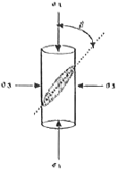
- 약 0°
- 약 30°
- 약 45°
- 약 60°
(정답률: 49%)
46. 암반분류 중 Q-system에 대한 설명으로 옳지 않은 것은?
- 외부응력조건을 고려한다.
- 불연속면의 변질정도를 고려한다.
- Q값의 최대값과 최소값의 비는 106이다.
- 터널보다는 암반사면, 기초 등의 설계에 주로 적용한다.
(정답률: 53%)
47. 다음 중 일축압축시험을 실시하는 경우 시험 절차상 준수하여야 할 유의사항으로 옳지 않은 것은? (단, 국제암반역학회(ISRM, 1981)의 제안 사항이다.)
- 재하속도는 3.0~5.0 MPa/s가 되도록 한다.
- NX 이상의 원주형 시험편을 사용하여야 한다.
- 직경(D)에 대한 높이(L)의 비(L/D)는 2.5~3.0으로 한다.
- 시험편의 직경은 암석에 존재하는 가장 큰 입자보다 10배 이상 커야 한다.
(정답률: 50%)
48. 등방탄성체에 적용하는 용력텐서가 다음과 같을 때, 탄성계수가 5GPa, 포아송비가 0.2라면 이 때의 체적팽창률은?
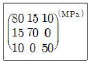
- 0.011
- 0.021
- 0.024
- 0.035
(정답률: 49%)
49. 다음 중 지하 액화가스비축공동에 사용되는 수장막(워터커텐)의 주요기능에 대한 설명으로 옳은 것은?
- 공동 내 가스와 지하수를 분리하기 위해 설치한다.
- 가수가 공동외부로 유출되는 것을 막기 위해 설치한다.
- 공동내부로 이물질이 흘러들어가지 못하도록 설치한다.
- 공동의 천정에 접하도록 설치할 때가 가장 효율적이다.
(정답률: 73%)
50. 절리암반을 구성하는 무결함의 m값(mi)이 20, 절리암반의 지질강도지수(GSI)가 70인 경우 절리암반의 m값(mb)과 s값으로 알맞은 것은? (단, m, s는 Hoek-Brown 파괴조건식의 강도정수)
- mb=1.64, s=0.0067
- mb=1.64, s=0.036
- mb=6.85, s=0.0067
- mb=6.85, s=0.0036
(정답률: 15%)
51. 조사선(scanline) 조사를 통하지 않고 불연속면의 평균 간격을 간접적으로 구하고자 할 때 가장 유용한 자료는?
- RQD(암질지수)
- 블록의 평균부피
- GSI로 표현된 절리암반간도
- 불연속면 방향 분포의 평균 밀도
(정답률: 72%)
52. 소규모의 절리가 발달한 암반사면에서 일반적으로 발생할 수 있는 파괴형태로 가장 거리가 먼 것은?
- 평면파괴
- 원호파괴
- 쐐기파괴
- 전도파괴
(정답률: 71%)
53. 어느 암석의 포아송비가 0.25, 탄성계수가 4.25×105kg/cm2라면 이 암석의 체적탄성계수는?
- 2.8×105kg/cm2
- 3.0×105kg/cm2
- 9.0×105kg/cm2
- 20.5×105kg/cm2
(정답률: 42%)
54. 공동의 벽면에 슬롯을 굴착하여 초기응력을 측정하는 방법으로 옳은 것은?
- 수압파쇄법
- 응력개방법
- 응력보상법
- DRA(Deformation Rate Analysis)법
(정답률: 46%)
55. 다음 시험법 중 그 용도가 다른 것은?
- AE/DRA
- 수압파쇄
- CSIRO Cell
- Goodman Jack
(정답률: 65%)
56. 다음 암석에 대한 파괴이론 중 중간주응력(σ2)을 고려한 것은?
- Tresca 이론
- Von Mises 이론
- Mohr 이론
- Goodman Jack
(정답률: 66%)
57. 최대 주응력이 50kg/cm2, 최소 주응력이 -550kg/cm2일 때 최대전단응력은? (단, 여기에서 (-)는 압축응력을 의미한다.)
- -250kg/cm2
- 250kg/cm2
- 300kg/cm2
- 600
(정답률: 59%)
58. 다음 중 압입경도의 종류가 아닌 것은?
- 쇼어경도
- 로크웰경도
- 브리넬경도
- 비커스경도
(정답률: 57%)
59. z축에 수직한 x-y 평면의 평면응력(plane stress)상태를 표시하는 식이 아닌 것은?
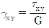
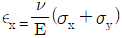
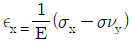
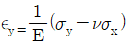
(정답률: 75%)
60. 다음 중 암반의 공학적 분류법인 RMR 분류법의 평가항목에 속하지 않는 것은?
- 초기응력
- 일축압축강도
- 절리면의 간격
- 지하수 출수 정도
(정답률: 45%)
4과목: 화약류 안전관리 관계 법규
61. 일시적인 토목공사를 하거나 그 밖의 일정한 기간의 공사를 하는 사람이 그 공사에 사용하기 위하여 화약류를 저장하고자 하는 때에 한하여 설치할 수 있는 화약류 저장소는?
- 1급저장소
- 2급저장소
- 3급저장소
- 화약류취급소
(정답률: 78%)
62. 화약류 판매업자가 판매할 목적으로 양수허가를 받지 아니한 사람에게 화약류를 양도했을 경우 행정처분기준은? (단, 위반횟수는 3회이다.)
- 1월 효력정지
- 3월 효력정지
- 6월 효력정지
- 허가 취소
(정답률: 43%)
63. 화약류의 운반시 화약류를 실은 차량이 진행하는 때에 두어야 하는 안전거리의 기준으로 옳은 것은? (단, 앞지르는 경우는 제외)
- 50m 이상
- 100m 이상
- 150m 이상
- 200m 이상
(정답률: 70%)
64. 화약류관리보안책임자 면허증에 대한 설명으로 옳지 않은 것은?(오류 신고가 접수된 문제입니다. 반드시 정답과 해설을 확인하시기 바랍니다.)
- 주민등록상의 주소의 변경이 있을 시에는 즉시 관할 경찰서에 신고해야 한다.
- 면허증을 분실하였을 때에는 면허관청에 신고하여 다시 교부받을 수 있다.
- 면허정지 또는 취소처분을 받은 때에는 면허증을 지체 없이 면허관정에 반납해야 한다.
- 면허증을 분실했을 경우에는 면허관청에 재교부신청서와 함께 잃어버리게 된 경우이서를 첨부하여 제출해야 한다.
(정답률: 71%)
65. 꽃불류 사용의 기술상의 기준으로 틀린 것은?
- 풍속이 10m/s 이상일 때는 꽃불류의 사용을 중지해야 한다.
- 사용준비가 끝난 쏘아 올리는 꽃불류로부터 꽃불류를 사용하지 않아야 한다.
- 쏘아 올리는 꽃불류는 10m 이상의 높이에서 퍼지도록 해야 한다.
- 꽃불류의 발사용 화약에 점화하여도 그 화약이 폭발 또는 연소되지 아니하는 때에는 그 발사통에 많은 양의 물을 넣고 10분 이상 경과한 후에 서서히 발사통을 눕히어 꽃불류를 꺼내야 한다.
(정답률: 54%)
66. 지상 1급저장소의 위치ㆍ구조 및 설비의 기준으로 틀린 것은?
- 건물은 단층의 철근콘크리트조나 벽돌콘크리트블록 또는 석조로 한다.
- 출입문은 2중문으로 하고 덧문에는 두께 3mm 이상의 철판으로 보강하되 2개 이상의 자물쇠 장치를 한다.
- 창은 저장소의 규모에 따라 햇빛이 잘 들도록 저장소의 기초로부터 1.7m 이상의 높이로 한다.
- 저장소 안에는 10lux 이상의 조명장치를 설치하여야 한다.
(정답률: 80%)
67. 재해 예방을 위해 필요하다고 인정되는 경우에는 화약류 소유자에게 안정도 시험을 명할 수 있는 사람은?
- 국방부 장관 또는 도지사
- 도지사 또는 경찰서장
- 법무부 장관 또는 도지사
- 경찰청장 또는 지방경찰청장
(정답률: 74%)
68. 다음은 전기발파의 기술상의 기준에 대한 사항이다. ()안에 알맞은 내용은?
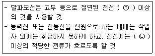
- ㉠ 30m, ㉡ 0.1암페어
- ㉠ 50m, ㉡ 0.1암페어
- ㉠ 30m, ㉡ 1암페어
- ㉠ 50m, ㉡ 1암페어
(정답률: 48%)
69. 화약류의 양도ㆍ양수허가신청에 대한 설명 중 틀린 것은?
- 양수허가의 유효기간은 1년을 초과할 수 없다.
- 1회에 허가할 수 있는 화약류의 수량은 화약류 사용계획서에 기재된 그 연도의 1년간의 사용량을 초과할 수 없다.
- 화약류를 양도할 때 양도인은 양수인이 소지하는 화약류 양도ㆍ양수허가증 뒤쪽의 양도인ㆍ양수인 기재란에 소정의 사항을 기재하여야 한다.
- 화약류 양수허가는 반드시 화약류 사용지를 관할하는 경찰서장의 허가를 받아야 한다.
(정답률: 59%)
70. 화약류 저장소 설치자는 화약류 출납부의 기입을 완료한 날로부터 몇 년간 이를 보존해야 하는가?
- 1년
- 2년
- 3년
- 5년
(정답률: 79%)
71. 화약류의 사용ㆍ취급ㆍ폐기 등의 설명으로 옳지 않은 것은?
- 화약류를 발파하거나 연소시키려는 사람은 사용지를 관할하는 경찰서장의 화약류 사용허가를 받아야 한다.
- 화약류는 20세 미만의 사람에게 취급하게 해서는 아니된다.
- 화약류의 판매업자는 허가 없이 판매목적으로 화약류를 양도ㆍ양수할 수 있다.
- 화약류의 사용허가를 받은 사람은 동일 사용장소 내에서라도 허가받은 용도와 다른 용도로 사용 시에는 사용지 관할 결찰서장의 허가를 다시 받아야 한다.
(정답률: 31%)
72. 화약류의 제조소ㆍ저장소ㆍ판매소와 그 밖의 취급소의 지정된 장소 외에서 담배를 피웠을 경우 벌칙으로 옳은 것은?
- 300만원 이하의 과태료
- 2년 이하의 징역이나 500만원 이하의 벌금
- 3년 이하의 징역이나 700만원 이하의 벌금
- 500만원 이하의 과태료화약류
(정답률: 68%)
73. 신호 또는 관상용르로 1일 동일한 장소에서 꽃불류를 사용하고자 할 때, 화약류 사용허가를 받아야 하는 경우는?
- 직경 6cm 미만의 둥근 모양의 쏘아 올리는 꽃불류를 40개 사용하는 경우
- 직경 6cm 이상 10cm 미만의 둥근 모양의 쏘아 올리는 꽃불류를 10개 사용하는 경우
- 직경 10cm 이상 20cm 미만의 둥근 모양의 쏘아 올리는 꽃불류를 5개 사용하는 경우
- 200개 이하의 염관을 사용한 쏘아 올리는 꽃불류를 2개 사용하는 경우
(정답률: 72%)
74. 총포ㆍ도검ㆍ화약류 등의 안전관리에 관한 법률상 “화약류”를 구분할 때 다음 중 나머지 셋과 분류가 다른 것은?
- 초안폭약
- 다이너마이트
- 전기뇌관
- 액체산소폭약
(정답률: 69%)
75. 수중저장소에 화약류를 저장하는 경우 화약류는 수면으로부터 수심 몇 cm 이상의 물속에 저장하여야 하는가?
- 30
- 50
- 100
- 150
(정답률: 62%)
76. 테트라센 및 이를 주로 하는 기폭약은 수분 또는 알코올분이 몇 % 정도 머금은 상태로 운반해야 하는가?
- 25%
- 23%
- 20%
- 15%
(정답률: 63%)
77. 총포ㆍ도검ㆍ화약류 등의 안전관리에 관한 법률상 300만원 이하의 과태료 처분을 받는 경우에 해당되지 않은 것은?
- 화약류의 운반과정에서 운반신고증명서를 지니지 아니한 사람
- 화약류 안정도 시험결과 대통령령이 정하는 기술상의 기준에 미달한 화약류를 폐기하지 않는 사람
- 화약류출납부를 비치하지 않거나 필요한 사항을 기재하지 아니한 사람
- 화약류를 취급하면서 화약류관리보안책임자의 안전상 지시 감독에 따르지 아니한 사람
(정답률: 68%)
78. 총포ㆍ도검ㆍ화약류 등의 안전관리에 관한 법률의 내용으로 옳지 않은 것은?
- 화약류제조업을 영위하고자 하는 사람은 제조소마다 행정안전부령이 정하는 바에 의하여 경찰청장의 허가를 받아야 한다.
- 화약류판매업을 영위하고자 하는 사람은 판매소마다 행정안전부령이 정하는 바에 의하여 판매소 소재지 관할 지방경찰청장의 허가를 받아야 한다.
- 장난감용 꽃불류 판매업을 영위하고자 하는 사람은 판매소마다 행정안전부령이 정하는 바에 의하여 판매소마다 행정안전부령이 정하는 바에 의하여 판매소 소재지 관할 경찰서장의 허가를 받아야 한다.
- 화약류판매소에서 판매하는 화약류의 종류를 변경하고자 하는 때에는 판매소 소재지 관할 지방경찰청장의 허가를 받아야 한다.
(정답률: 61%)
79. 장난감용 꽃불류를 수입하고자 하는 사람은 누구의 허가를 받아야 하는가?
- 경찰서장
- 지방결찰청장
- 대통령
- 시ㆍ도지사
(정답률: 70%)
80. 초유폭약에 의한 발파의 기술상의 기준으로 옳은 것은?
- 금이 가고 틈이 벌어지거나 공동이 있는 천공된 구멍에는 절대로 장약을 하는 일이 없도록 할 것
- 뇌관이 달린 폭약은 장전용호스로 조심스럽게 장전할 것
- 가연성가스가 0.5% 이상이 되는 장소에서는 발파하지 아니할 것
- 장전작업이 끝난 후 남은 초유폭약은 지체없이 폐기할 것
(정답률: 74%)
5과목: 굴착공학
81. 암질지수(RQD, Rock Quality Designation)의 값을 추정하기 위하여 사용되는 것은?
- 암반 단위 면적당 절리의 개수
- 암반 단위 체적당 절리의 개수
- 암반 단위 면적당 총 절리길이
- 암반표면의 조사선과 만나는 절리의 개수
(정답률: 50%)
82. TBM 공법의 장점에 대한 설명으로 옳지 않은 것은?
- 노무비가 절감된다.
- 여굴 및 라이닝이 감소된다.
- 굴착단면의 안정성이 확보된다.
- 암질 변화에 대한 적용성이 뛰어나다.
(정답률: 72%)
83. 터널굴착 설계 시 개착식 공법과 터널식 공법을 선택하는 데 고려하여야 할 사항 중 가장 거리가 먼 것은?
- 지반조건
- 공사기간 및 비용
- 터널의 용도와 크기
- 소음, 진동 등 공해요소
(정답률: 42%)
84. 다음 조암광물 중 모래의 주성분으로 풍화에 강하고 유리와 같이 광택이 나는 조암광물은?
- 석영
- 운모
- 장석
- 휘석
(정답률: 73%)
85. 다음 중 숏크리트(Shotcrete)의 뿜어 붙이기 방식에 대한 설명으로 옳지 않은 것은?
- 건식공법은 비교적 장거리 압송이 가능하다.
- 습식공법은 건식공법에 비해 리바운드 및 분진의 발생이 적다.
- 습식공법은 뿜어 붙이는 작업 도중에 중단이 있으면 호스 등이 막히기 쉽고 부착성이 나쁘게 된다.
- 건식공법은 노즐에서 물과 재료를 혼합하기 때문에 작업원의 숙련도와 관계없이 품질관리가 용이하다.
(정답률: 69%)
86. 점토 지반에 개착식 굴착을 하고자 한다. 표준관입시험에 의한 N값이 1~2정도로 지반이 매우 연약한 경우 침투수 발생에 따라 대비해야 할 현상은?
- 히빙(heaving) 현상
- 파이핑(piping) 현상
- 보일링(boiling) 현상
- 액상화(liquefaction) 현상
(정답률: 66%)
87. 다음 그림과 같은 암반사면의 평면파괴(plane failure) 가능성을 평가하고자 할 때, 이 사면의 안전율은? (단, 암석의 단위중량은 0.025 MN/m3이며, 선형 Mohr-Coulomb 파괴기준을 적용)
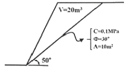
- 0.8
- 1.5
- 2.9
- 3.1
(정답률: 46%)
88. NATM 공법에서 지보재인 Rokc-bolt의 정착방법이 아닌 것은?
- 마찰형
- 선단 압입형
- 선단 정착형
- 전면 접착형
(정답률: 39%)
89. 다음 안반의 평가항목 중 Q 분류법과 RMR 분류법에서 공통으로 반영되지 않은 항목은?
- 지하수 유입상태
- 절리면의 간격(jount spacing)
- RQD(Rock Quality Designation)
- 절리면의 거칠기(joint roughness) 상태
(정답률: 39%)
90. 다음 중 지질평면도에 기재하는 사항이 아닌 것은?
- 지하수위 상황
- 암석의 분포상황
- 풍화층의 분포상황
- 단층 및 파쇄대의 분포상황
(정답률: 66%)
91. 수평응력 2.4t/m2, 수직응력 4.8t/m2가 작용하고 있는 암반 내에 지름 3m의 원형터널을 굴착하였다면, 터널 측벽에 작용하는 접선응력은?
- 3t/m2
- 7t/m2
- 12t/m2
- 21t/m2
(정답률: 59%)
92. 편리에 의한 이방성이 나타나는 암석으로 옳은 것은?
- 사암
- 응회암
- 천매암
- 화강암
(정답률: 69%)
93. 다음 중 TBM의 작업순서를 올바르게 나열한 것은?
- 외부켈리 전진→클램핑 패트 탈착→굴진→클램핑 패드 압착
- 외부켈리 전진→굴진→클램핑 패드 압착→클램핑 패드 탈착
- 클램핑 패드 탈착→굴진→클램핑 패트 압착→외부켈리 전진
- 클램핑 패트 압착→굴진→클램핑 패트 탈착→외부캘리 전진
(정답률: 61%)
94. 지하양수발전소의 특징으로 옳지 않은 것은?
- 전력 저부하시 잉여전력을 이용한다.
- 전체 발전설비의 효율적 운용에 기여한다.
- 여러 발전시설 중 완전정지 후 재가동까지 소요되는 시간이 가장 길다.
- 하부저수지의 물을 상부저수지에 양수하였다가 첨두부하 시 발전에 이용한다.
(정답률: 64%)
95. 지하공동(또는 터널)의 심도가 증가할 경우 발생할 수 있는 일반적인 경향으로 옳지 않은 것은?
- 암반강도가 증대된다.
- 암반응력이 증대된다.
- 불연속면의 빈도가 작아진다.
- 응력파괴의 가능성이 낮아진다.
(정답률: 50%)
96. 전단탄성계수(shear modulus) G=1GPa, 초기지압 Po=2MPa인 암반에 지름 6m의 원형터널을 굴착할 경우 벽면의 반경방향 변위(radial displacement)는? (단, 암반은 완전탄성체로 가정하며, 측압계수 K는 1이다.)(오류 신고가 접수된 문제입니다. 반드시 정답과 해설을 확인하시기 바랍니다.)
- 1.5mm
- 3.0mm
- 9.0mm
- 15mm
(정답률: 7%)
97. RMR 분류법에 의한 암반분류애서 절리방향과 굴착진행방향에 대한 보정은 점수로서 환산되는데, 다음 중 가장 크게 감점을 받는 경우는?
- 불리한 절리방향에서의 기초 굴착
- 불리한 절리방향에서의 사면 굴착
- 매우 불리한 절리방향에서의 터널 굴착
- 주향과 평행한 방향으로 광산 갱도 굴착
(정답률: 66%)
98. 지중구조물에 대한 내진계산법 중 비탈면 안정성 평가를 위해 사용하는 방법으로, 지진운동의 관성력을 작용력으로 추가하여 한계평형법에 의해 안전율을 계산하는 방법은?
- 변위해석법
- 유사정적법
- 응답변위법
- 시간이력법
(정답률: 36%)
99. 한계평형법을 적용하여 해석할 수 없는 사면파괴의 형태는?
- 쐐기파괴
- 원호파괴
- 전도파괴
- 평면파괴
(정답률: 53%)
100. 암반층에 시공되는 NATM 터널에 대해 평면변형률 조건의 2차원 수치해석을 수행하여 숏크리트에 발생한 부재력을 평가한 결과가 보기와 같을 때, 숏크리트에 발생한 휭압축응력(㉠)과 허용 응력법에 의해 평가한 숏크리트의 안정성 판단 결과(㉡)로 옳은 것은? (단, 휨 압축응력에 대해서만 평가한다.)
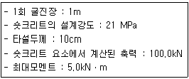
- ㉠:1.0MPa, ㉡:불안정
- ㉠:2.0MPa, ㉡:안정
- ㉠:3.0MPa, ㉡:불안정
- ㉠:4.0MPa, ㉡:안정
(정답률: 26%)